Sparse visual anchors and kinematic deltas for a wrist-camera manipulation policy,
trained in simulation and deployed zero-shot on a Kinova Gen3
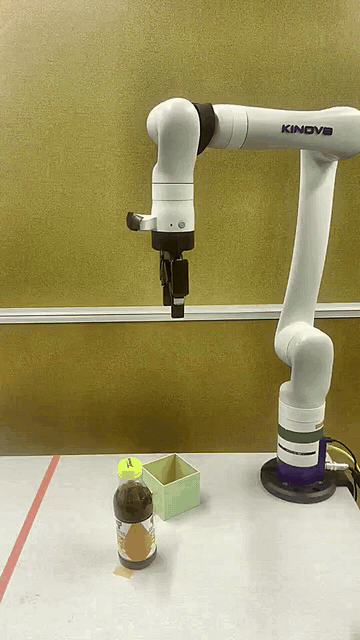
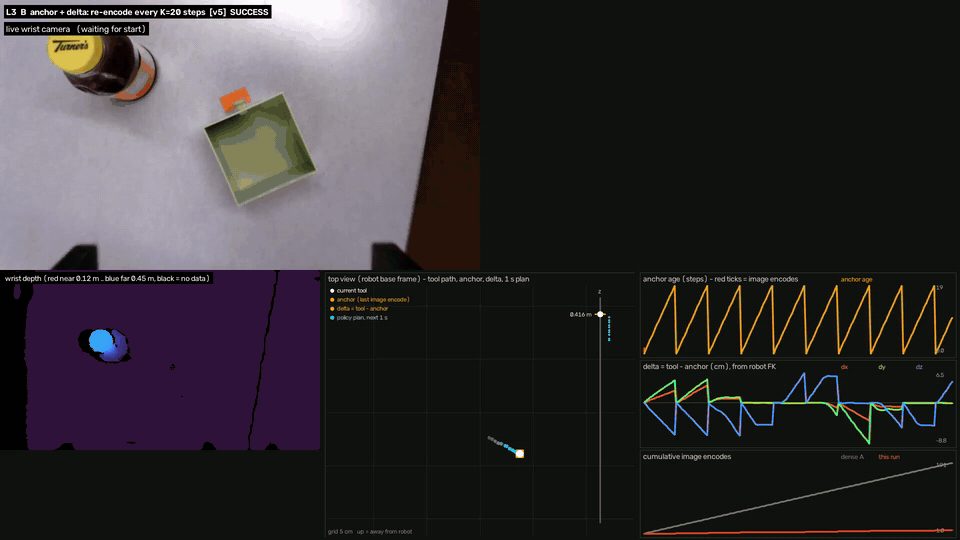
The same real zero-shot run of policy B, 15x speed. Left: third-person phone video. Right: the live wrist camera next to the image the policy is actually using, which is the cached anchor, frozen until the next encode. Below are wrist depth, the top-view tool path with the anchor, the delta and the 1 s plan, and timelines of anchor age, delta and image encodes.
Robot manipulation videos are highly redundant: between a few events such as grasping and releasing, consecutive frames carry little new information. We ask whether a visuomotor policy really needs to encode the camera image at every control step. We compare two policies that share the same network, data and training: A encodes every wrist-camera frame, and B encodes a frame only at sparse anchors and between anchors receives a low-dimensional delta from robot proprioception (end-effector displacement since the anchor, gripper state at the anchor, anchor age). Anchors are refreshed every K steps or adaptively, on gripper events and after large hand motion, using proprioception only. Both policies are trained by behaviour cloning in a MuJoCo replica of a real Kinova Gen3 cell, with class-map-driven appearance randomisation, and are deployed zero-shot. In simulation, B matches A (30/30 vs. 29/30). On the real robot, B completes the pick-and-place in all tested layouts while running the image encoder about once every 20 steps, reducing policy compute from 9.0 to 1.6 ms per step and stored visual data by about 18x. We also analyse the sim-to-real failures we encountered and show that they came from appearance and from an unobservable expert timer, not from encoding fewer images.
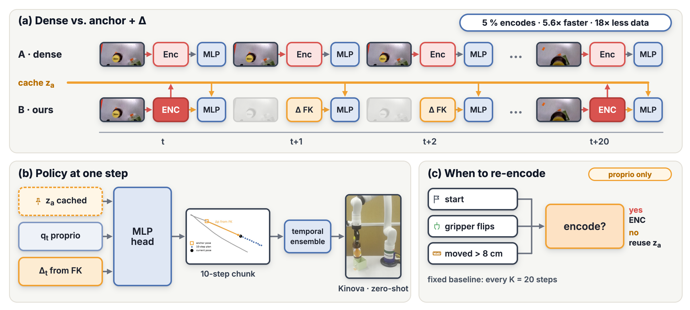
(a) Dense encoding (A) runs the image encoder at every step; anchor + delta (B) encodes at anchors, caches the feature and feeds a kinematic delta in between. (b) One control step of the policy. (c) The anchor rule uses proprioception only.
Both policies use a ResNet-18 image encoder and a small MLP head that outputs a chunk of 10 future steps (tool-position offsets and gripper logits) at 10 Hz. Policy A encodes the current frame \(z_t = E_\theta(I_t)\) at every step. Policy B encodes only at anchor steps \(t_a\), caches \(z_a = E_\theta(I_{t_a})\), and conditions on a delta computed from robot sensors only:
$$\Delta_t = \Big[\tfrac{p_t - p_{t_a}}{5\,\mathrm{cm}},\; g_{t_a},\; \tfrac{t - t_a}{50}\Big], \qquad \{\hat o_{t+k}, \hat c_{t+k}\}_{k=0}^{9} = \pi_\phi\big(z_a,\, q_t,\, \Delta_t\big),$$where \(p_t\) is the tool position from forward kinematics, \(g\) the gripper state from its position sensor, and \(q_t\) the current proprioception. A new anchor is taken with a fixed rule (\(t \bmod K = 0\), \(K=20\)) or an adaptive rule that fires at the episode start, when the gripper opens or closes, or when \(\lVert p_t - p_{t_a}\rVert > 8\) cm. The image is never used to decide when to re-encode. Commands are obtained by averaging the overlapping predictions of recent chunks (temporal ensembling). Training uses \(\mathcal L = \lVert \hat o - o^\ast\rVert_1 + 0.1\,\mathrm{BCE}(\hat c, c^\ast)\); B is trained on mixed anchor ages so that the anchor age cannot be used as a clock.
A MuJoCo replica of the real cell (wrist camera with the real intrinsics and mount, measured bottle and box, table height from depth) provides scripted-expert demonstrations and closed-loop evaluation on unseen scenes. Below, the three policies run on the same randomised scene.
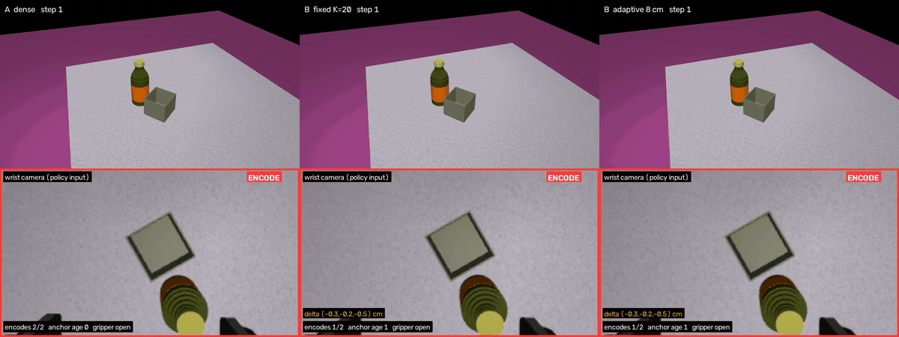
Simulation, same scene for A (dense) | B (fixed K=20) | B (adaptive), 3x speed. Bottom row: the wrist camera the policy sees; red frames mark image encodes.
| model version | A dense | B fixed K=20 | B adaptive 8 cm | ms / step (A → B) |
|---|---|---|---|---|
| v2 (n = 50) | 50/50 | 49/50 | 48/50 | 11.5 → 2.0 |
| v4 (n = 50) | 49/50 | 46/50 | 47/50 | 9.4 → 1.6 |
| v5 (n = 30) | 29/30 | 30/30 | 30/30 | 9.6 → 1.6 |
Closed-loop success on unseen scenes. B fixed-400 (a single anchor at the start) fails 0/50, so anchors must be refreshed.
Kinova Gen3 with a Robotiq 2F-85 gripper and the wrist vision module, no real training data. Each cell is a full episode with the per-frame algorithm state overlaid (15x speed).
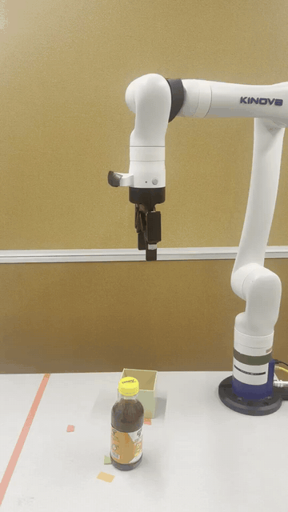
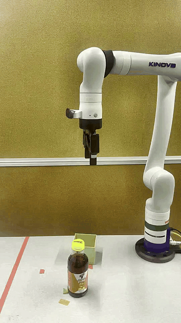
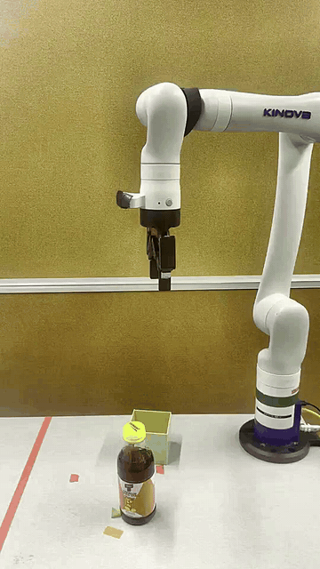
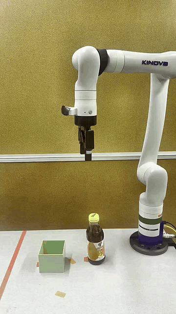
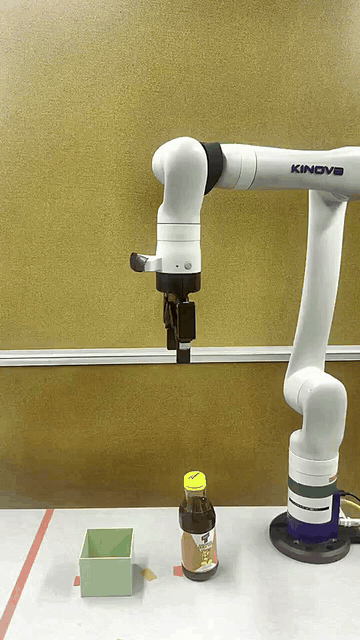
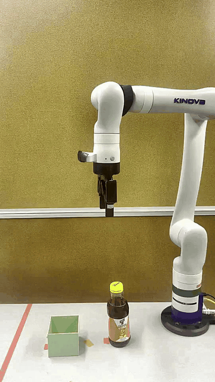
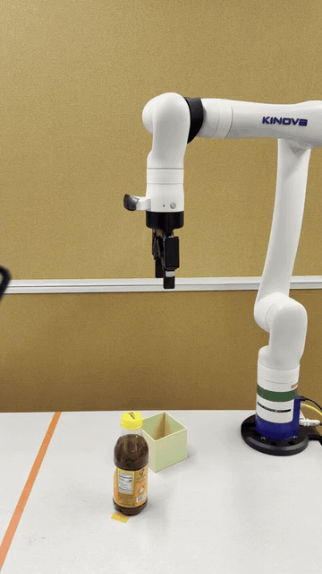
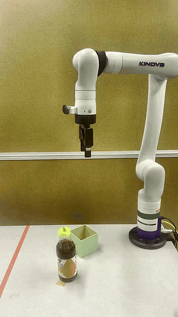
Live wrist camera vs. the image the policy uses (A: the current frame; B: the frozen anchor), with depth, top-view path, delta and encode timelines.
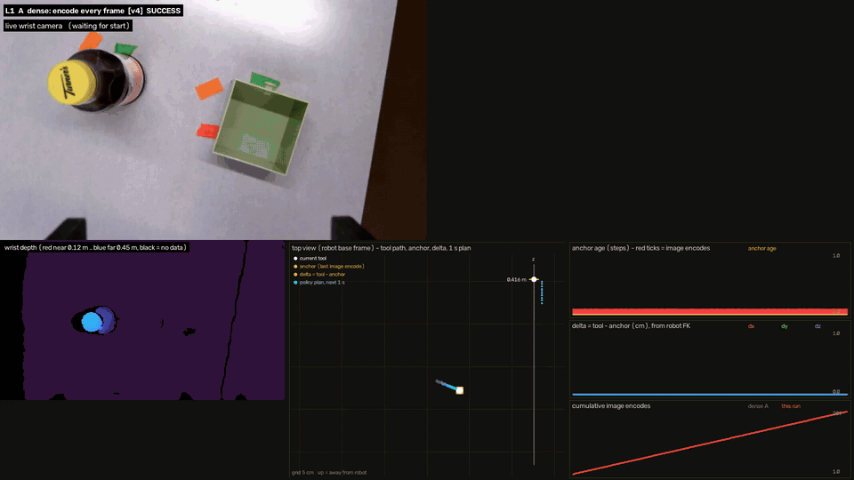
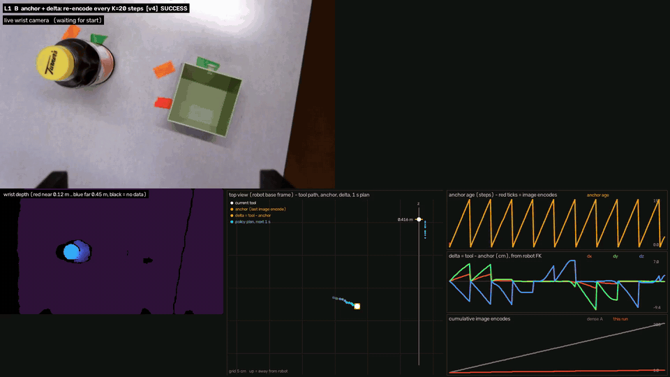
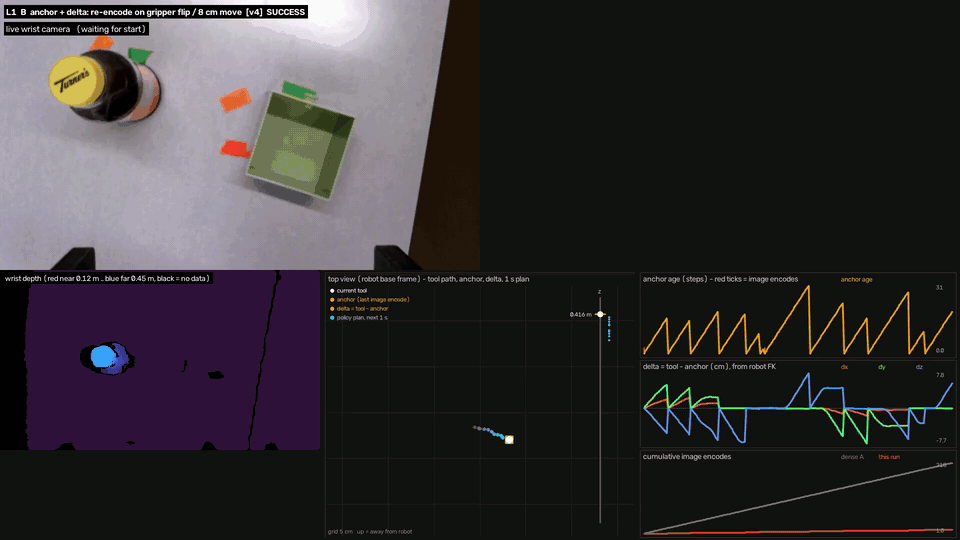
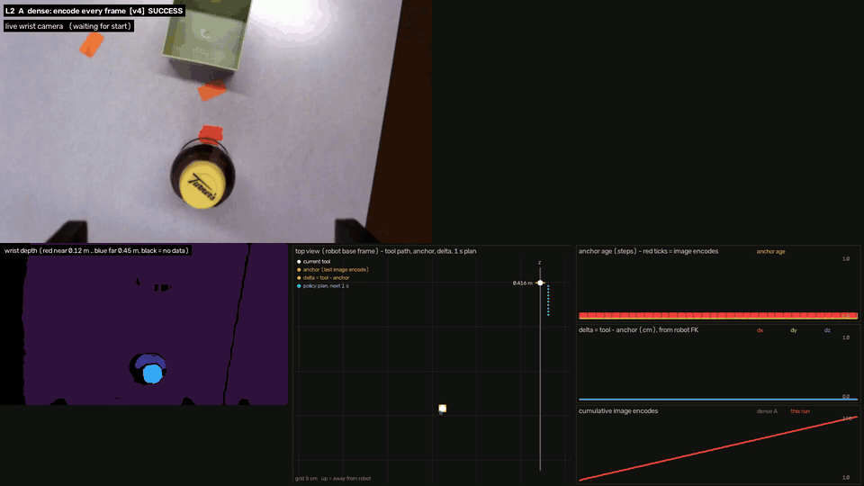
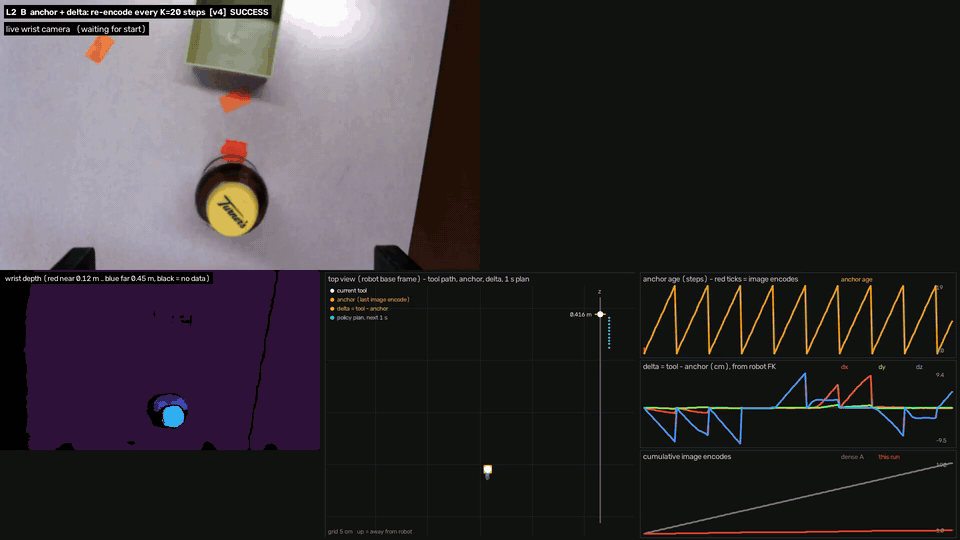
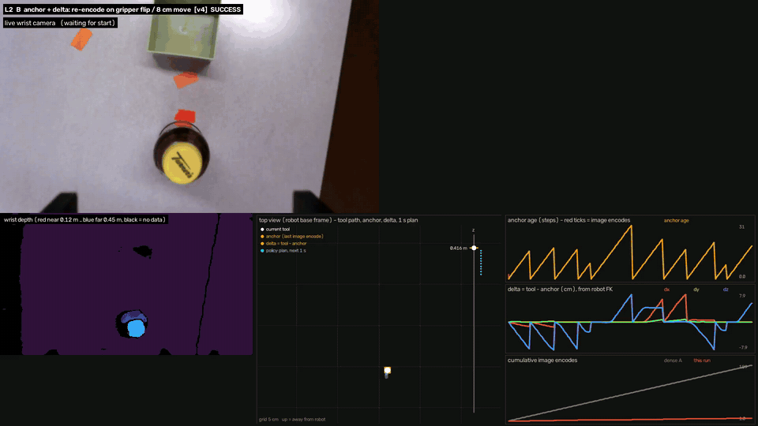
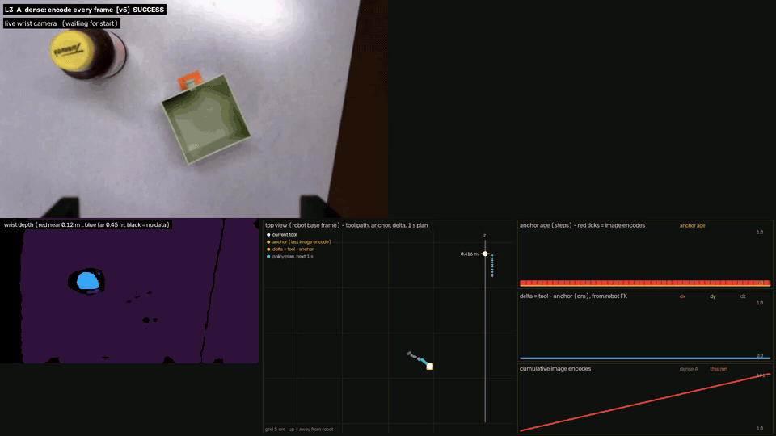
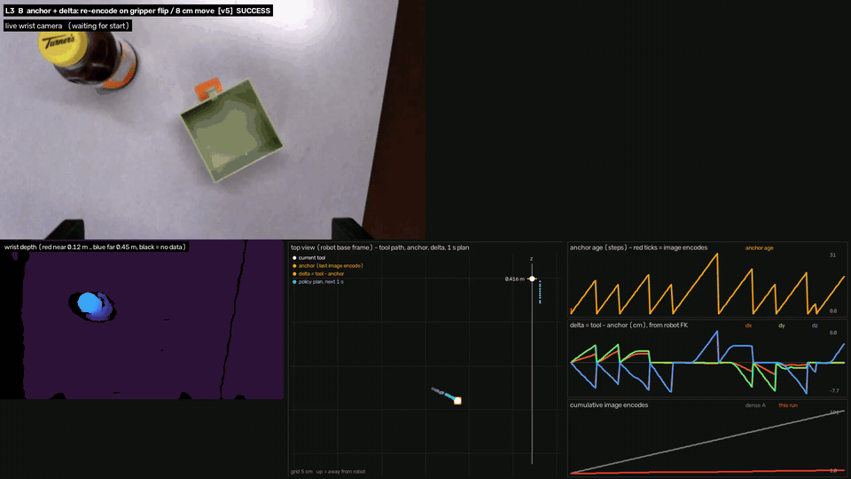
| A dense | B fixed K=20 | B adaptive | |
|---|---|---|---|
| success (grid) | 3/3 | 3/3 | 3/3 |
| image encodes / episode | 191–209 (100 %) | 10–11 (5.1–5.4 %) | 10–12 (5.3–5.5 %) |
| policy compute (idle M4 GPU) | 8.95–8.98 ms | 1.56–1.78 ms | 1.56–1.68 ms |
| stored visual data / episode | 2.1–2.4 MB | 117–138 kB | 110–147 kB |
Compute was re-measured by replaying each run's exact inputs on an idle GPU (the replay reproduces the logged anchor schedule exactly). Stored data = policy-input frames a method has to keep, plus 20 bytes per step of delta for B.
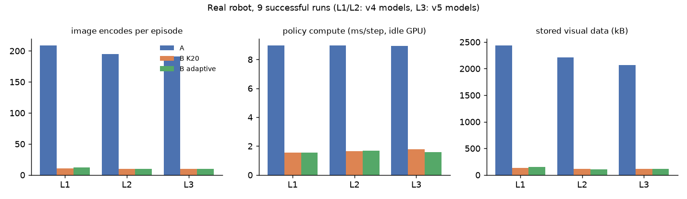
Between anchors the camera is not encoded. The policy reuses the cached anchor feature and receives the delta, the tool displacement since the anchor from forward kinematics, together with the gripper state at the anchor and the anchor age. The animation shows the live wrist RGB-D, the cached anchor image the policy is actually using, and the delta computed at every step.
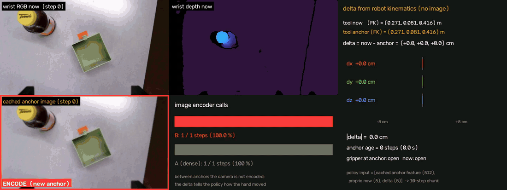
Real run, B fixed K=20 (2x speed). Left: live wrist RGB and depth (top) and the cached anchor image (bottom). Right: delta = tool now − tool at anchor, from FK.
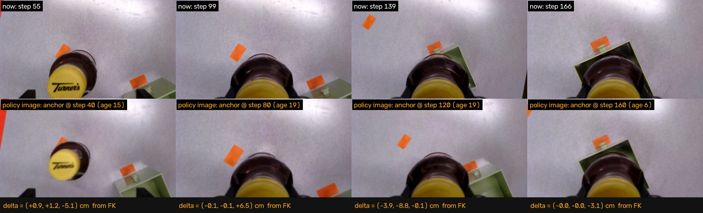
Four moments of the same run: the current wrist view (top), the anchor image the policy uses (middle) and the kinematic delta (bottom).
The fixed rule re-encodes every 20 steps. The adaptive rule re-encodes when the hand has moved more than 8 cm since the anchor, or when the gripper sensor reports a state change. Both rules use proprioception only. On the real robot they lead to 10–12 encodes per ~190-step episode, placed at different moments.
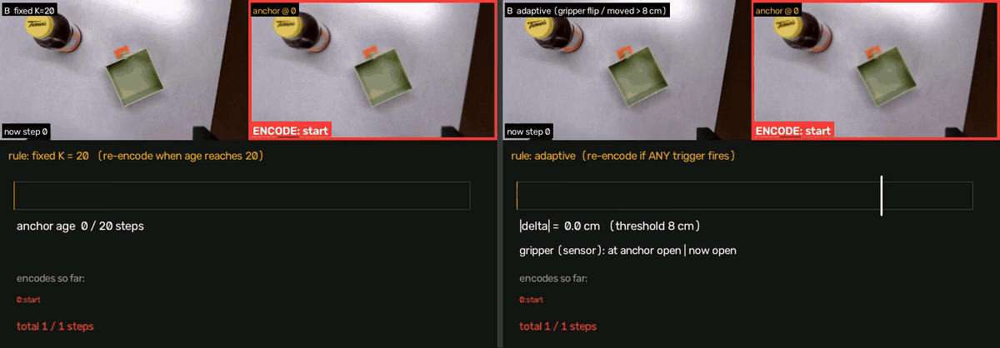
Real runs on layout L3 (2x speed). Left: fixed K=20, anchor age counting to 20. Right: adaptive, with the distance-since-anchor bar against the 8 cm threshold and the gripper state; each encode is labelled with its trigger.
Appearance, not geometry. Matching the simulator's colours to the real scene made real-frame agreement worse. A region-swap test showed that the gap came from the table background and the held bottle, not the box colour. Class-map-driven randomisation (random table textures with glare, cables and stains, and separate colour gains for bottle, box and gripper) raised agreement with real demonstrations from 77–86 % to 97–98 %.
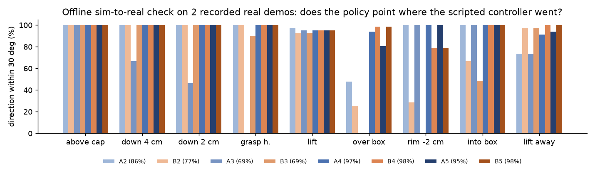
Offline check on recorded real demonstrations: fraction of frames where the predicted 1 s motion points within 30° of where the scripted controller went, per task phase and model version.
Observable gripper decisions. Two real failure modes of the v4 models came from the gripper. (i) The expert waited a fixed 0.3 s before closing, which the policy cannot observe, so it kept predicting "close in about six steps" and on one layout never closed. (ii) The policy judged whether it was holding the bottle from the image, not from the gripper sensor, and re-opened after grasping when the real post-grasp view was encoded. The v5 models use an expert that closes and releases on arrival, and erase the gripper fingers during training. They hold on every layout, including the one where v4 failed.
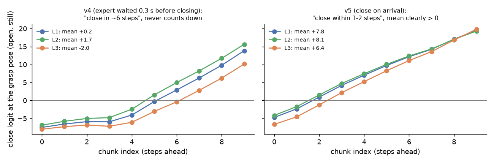
Close logits at the grasp pose on real frames: v4 never counts down; v5 closes immediately.
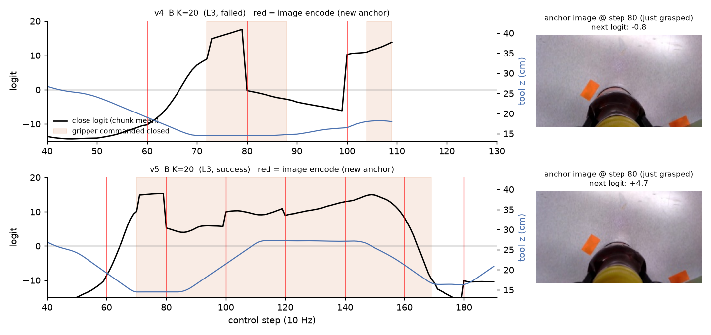
Same layout, policy B: with v4 the anchor encoded right after the grasp (step 80) flips the gripper decision to "open"; with v5 it keeps holding.
Real-robot results cover three in-distribution layouts with one training seed per model. The 3x3 grid shows v4 models on L1/L2 and v5 models on L3. The benefit of anchor + delta depends on where compute goes: it is large for an image-encoder-dominated policy (5–6x here) and small for a flow-matching VLA whose denoising dominates (at most 1.24x for SmolVLA in our tests).